「やっぱり美容が好き」
そんな気持ちをもう一度思い出したい
美容師・アイデザイナーさんへ。
福島市で“自分らしく”美容師・アイデザイナーを楽しみたいあなたへ。
【ヘッドスパ・髪質改善サロン】
【まつ毛と眉毛の専門サロン】
働きやすさも、美容師・アイデザイナーとしての成長も、どちらもあきらめない職場です。
現在募集中の職種
📩 サロン見学・質問だけでもOK
↓↓下の画像をタップからお問い合わせできます↓↓

現在募集中の求人情報
🔸hair atelier nine ＜森合店＞
■ 中途採用
・スタイリスト＜正社員＞
・アシスタント＜正社員＞
■ 新卒採用
・アシスタント＜新卒正社員＞2028年卒業予定の美容学生の方
美容師として、もう一度しっかり成長したい。しっかり基礎を学びながら成長したい方へ。
hair atelier nineでは
ヘッドスパ・髪質改善を軸にした技術とカウンセリング力を大切にしています。
・技術に不安がある
・教育環境に悩んできた
・人間関係でつまずいた経験がある
そんな方でも大丈夫です。
一人ひとりのレベルに合わせたカリキュラムとサポート体制で、確実にスタイリストデビューまで導きます。
✔ 早期デビュー可能（デビューまで1〜2年。新卒採用は2年間の教育カリキュラム合格でデビュー）
✔ 先輩スタッフによるマンツーマンの技術指導
✔ 無理のない働き方（完全週休2日）
「ただ働く場所」ではなく
美容師として自信を取り戻せる環境を用意しています。
まずは見学からでも大歓迎です。
hair atelier nineで、新しい一歩を一緒に踏み出しませんか？💇♀️✨
※公式LINEをご登録いただいておりますと、求人募集が開始いたしましたらすぐにご案内させていただきます。
📍募集必須事項
美容師免許取得済の方 もしくは 美容師免許取得予定の方（美容学校に通われている方）
💬サロン見学・体験随時受付中！
【その他の求人は、公式LINEよりお問い合わせください。】
📲ご応募・お問い合わせは【公式LINE】からお気軽に！
👇登録はこちら👇

💰最低保証あり！
▶ スタイリスト：月給 23万円〜
▶時短スタイリスト：月給18万円〜
▶アシスタント：月給21万円〜
▶ アイリスト<正社員＞ ：月給 20万円〜
▶ アイリスト＜時短勤務社員＞ ：月給 18万円〜
▶パート・アルバイト ：1,100円〜
📘わかりやすいカウンセリングマニュアル完備
✂️しっかり学べるトレーニング体制あり
「キャリアに自信がない…」そんな方でも大丈夫。
入社後すぐにお客様対応ができるようサポートします！
この度は、株式会社アトリエ・ナインの求人ページをご覧いただき、誠にありがとうございます。
代表の菅野（かんの）です。
私たちのサロンに少しでも興味を持っていただけたこと、とても嬉しく思います☺️
これからのアトリエ・ナインを一緒につくってくださる、素敵な出会いを心から楽しみにしています。
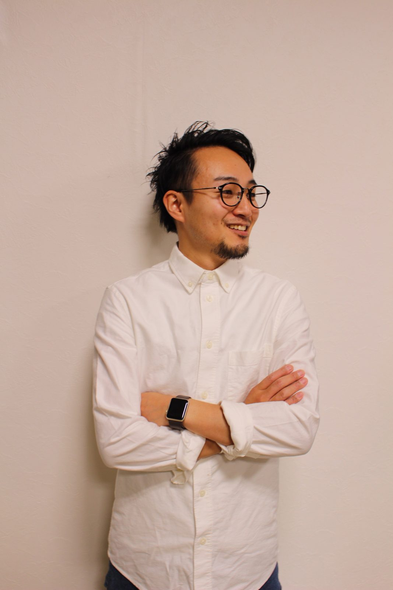
代表ご挨拶
「プライベートも、美容師としての時間も、どちらも大切にしたい」
そんな想いを持った方のための、あたたかいサロンづくりを目指しています。
現在、福島市森合・岡部にヘアサロンを2店舗、アイラッシュサロンを1店舗展開し、
20代〜40代のスタッフ15名が在籍。
ヘアサロンのスタイリスト・アシスタント12名、アイリスト3名が、それぞれの個性を活かしながら、日々活躍しています✨
まだまだ成長途中の私たちですが、
「ここでなら、自分らしく働けそう」
そう感じてもらえるサロンでありたいと、常に環境づくりに力を入れています。
これからのアトリエ・ナインを一緒につくってくれる、新しい仲間との出会いを心から楽しみにしております☺️🌈

当社の働き方の特徴
【当サロンの魅力・働きやすさ】
• 📘技術・接客・ヘッドスパのマニュアル完備！
誰でも再来率70％以上を目指せる、安定したサポート体制です。
• ✨月50件前後の新規お問い合わせあり！
新規のお客様が多いため、入客チャンスが豊富。チャンスを逃すことはありません。
• 💇♀️高単価（平均技術単価：10,000円以上）
1人ひとりのお客様にじっくり丁寧に向き合える環境です。
• 💰最低保証ありで安心！
・スタイリスト：月給 23万円〜
・時短勤務スタイリスト：月給 18万円〜
・アシスタント：月給 21万円〜
・アイリスト ：月給 20万円〜
閑散期や顧客が少ない時期、有休消化の長期休暇でも、安定した収入を確保できます。
• 🧘♀️スタッフ間トラブルゼロを目指して
店内ルールを明確化し、お互いに気持ちよく働ける職場環境を整えています。
• ✂️アシスタントからスタイリストへの教育サポート充実！
明確なカリキュラムを用意しており、合格すれば確実にスタイリストデビューへと進めます。全力でバックアップします！
• ⏰営業時間外のミーティングなし！
スタイリストの方は基本的に営業終了後すぐに退勤OK。アシスタントも営業中にヘアモデルも入れて、どんどんスキルアップ。無駄な残業はありません。
• 🤱女性スタッフも安心して長く働ける制度
産休・育休の取得実績あり（これまでに4名が復帰）
有給休暇の消化率は100％！「休めない」という心配は一切ありません。
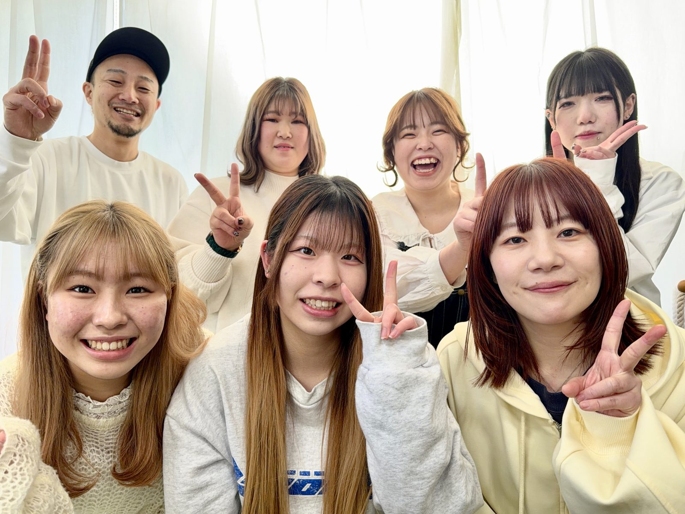
今の働き方に、こんなお悩みはありませんか？
• 1日の労働時間が長くて、いつもクタクタ…
• 休みが少なく、心も体も休まらない
• 入客のチャンスがほとんどない
• 営業時間が8時間以上、そのあとに練習会
• 休みの日にまで練習会やミーティング…
• 営業時間外に毎週のように会議がある
• 休みは寝るだけで終わってしまう
• 頑張って働いているのに、生活はギリギリ…
• サロンワークに全力を尽くしても、報われている実感がない
• 本当は、自分のペースで丁寧にお客様と向き合いたいのに、それができない…
そんな想いを抱えて、このページにたどり着いたあなたへ。
もしかしたら、私たちの働き方にちょっと驚くかもしれません。
「自分のお客様がいない…」
「しばらく美容師を離れていたからブランクが心配…」
「本当にここでスタイリストとして成長できるのかな…」
そんな不安を抱えていても、大丈夫。
大切なのは、
✨ 美容師を楽しみたいという気持ち
✨ お客様をキレイにしたいという想い
✨ 素直に学ぶ姿勢
それがあれば、私たちが全力でサポートします。
あなたが笑顔で輝ける美容師ライフを、一緒に叶えていきましょう。
入社後は、こんなステップで成長していけます。
【スタイリストの方へ】
入社後の流れとキャリアステップ
1. まずは2〜3週間でしっかり準備
ヘッドスパ技術やカウンセリング、接客のマニュアルをもとに、基本を丁寧に学んでいただきます。
2. 現場に慣れるサポート期間
空いた時間には他のスタッフのヘルプに入り、実際の接客や施術の雰囲気をつかんでいただきます。
3. 3〜4週目でスタイリスト入客スタート！
マニュアルやサポート体制が整っているので、安心してデビューできます。
4. 4〜5ヶ月目から歩合がスタート
頑張りがしっかりお給料に反映され、最低保証以上の収入が見込めます。
5. 6ヶ月目には総支給25万円以上が可能
実際に多くのスタッフがこの時期にしっかり収入を伸ばしています。
6. 1年後には総支給30万円以上のスタッフがほとんど！
安定した集客・技術力・サポート体制があるからこそ、しっかり成長できる環境です。
【アシスタントの方へ】
入社後の流れと成長ステップ
1. まずは2〜3週間の集中研修
ヘッドスパ技術や接客マニュアルをベースに、基礎からしっかり学べます。
✔ 営業中レッスンもOKなので、無理なくスキルが身につきます。
2. スタイリストのヘルプで実践力アップ！
日々のサロンワークで、接客や技術をリアルな現場で自然に習得できます。
3. あなただけの技術カリキュラムをご用意
一人ひとりに合わせた育成プランで、最短ルートでスタイリストデビューへ。
✔ モデルサポートありで安心して練習・実践が可能です。
4. 半年〜2年でスタイリストに必要な技術をしっかり習得
無理なく、自信を持ってステップアップできます。
5. スタイリストデビュー！
月30人前後の新規のお客様に入客できるチャンスあり。デビュー後すぐに実力を発揮できます。
6. 入社1年（デビューから6ヶ月）で、総支給25万円以上が可能！
実際に多くのスタッフが、安定した収入と成長を実現しています。
【アイリストの方へ】
入社後の流れと成長ステップ
1. まずは2〜3週間の集中研修
接客マニュアルをベースに、基礎からしっかり学べます。
✔ 営業中レッスンもOKなので、無理なくスキルが身につきます。
2. 3〜4週目でアイリストとして入客スタート！
技術は培っていただいたものがございますので、わからないことを外部講師がレクチャーしてくれます。
4. 3〜4ヶ月目から歩合がスタート
頑張りがしっかりお給料に反映され、最低保証以上の収入が見込めます。
5. 6ヶ月目には総支給25万円以上が可能
安定した集客・技術力・サポート体制があるからこそ、しっかり成長できる環境です。
そんな未来を、私たちはお約束します。
※決して「驚くような高収入！」ではないかもしれません。
でも――
サロンワークに追われすぎず、しっかりとプライベートも大切にできる。
そんな、美容師としても人としてもバランスの取れた生活が、ここにはあります。
「正社員」という安定した働き方をベースに、
自分の時間もちゃんと持てる美容師ライフを、私たちはご提供します。
スタッフから届いた喜びの声
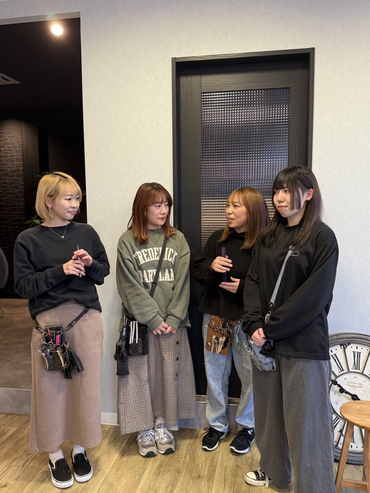
実際に働いているスタッフの声をご紹介します
nineに入社したスタッフたちが語る「リアルな体験談」を、ぜひご覧ください。
💬 「前職からは考えられない売上・指名数！」
自分の目標が、ここではあっという間に達成できました。働き方や仕組みが違うだけで、こんなにも結果が変わるなんて驚きです。
💬 「10年以上のブランクがあっても大丈夫でした」
入社後にしっかり技術を学び直させてもらい、4ヶ月で入客スタート。
1年後には月60万円の売上も達成でき、再び美容師を目指して本当に良かったと思える日々です。
💬 「土日にイベントやライブの予定があっても休める！」
プライベートも我慢しないで大切にできるのが、nineの魅力です。
💬「残業がないので、明るいうちに帰れるのが嬉しい」
家庭や趣味の時間もしっかり確保できるので、毎日が充実しています。
💬「スタッフ同士の関係がとても心地いいです」
お互いの働き方を尊重し合える風土があり、無理なくのびのびと働けます。
ルールが明確だから、守ればあとは自由に仕事ができるのもありがたいです。
💬 「営業中に練習ができるのが最高！」
空いた時間を使って効率的にスキルアップできるので、夜遅くまで残る必要がなく、プライベートとの両立も◎。
💬 「社内イベントも自由参加＆会社負担」
参加は自由なので気楽に楽しめますし、会費も会社負担だからありがたい！
💬「働く時間帯も選べるから、自分に合ったスタイルで働ける」
ライフスタイルに合わせた働き方ができるので、無理なく長く続けられます。
スタッフの声を通して、「nineの働きやすさ」をリアルに感じていただけたのではないでしょうか。
あなたの「こう働きたい！」も、ここできっと実現できます。
当サロンがスタッフに選ばれる理由
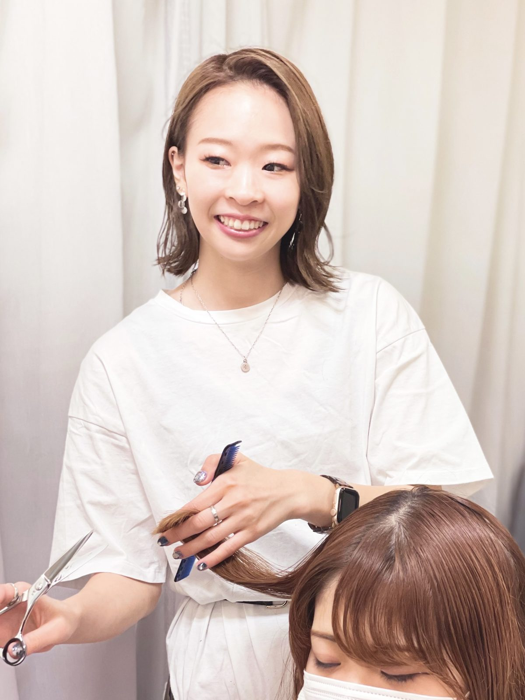
① 入社後すぐに活躍できる環境
nineでは、新しく入社された方がすぐに現場で活躍できる仕組みを整えています。
▼スタイリストの方へ
研修が終了次第、月に20〜30名の新規のお客様を担当可能です。さらに、フリーのお客様も優先的に入客していただけるため、早期に実績が出しやすい環境です。
▼アシスタントの方へ
半年〜2年を目安に、スタイリストデビューを目指します。中途入社の方は、これまでの経験を活かしつつ、足りない技術を補う個別カリキュラムを用意。明確な道筋で、確実にスタイリストを目指せます。活躍のチャンスが豊富だからこそ、美容師のやりがいをしっかり実感できるサロンです。
▼アイリストの方へ
研修が終了次第、月に30〜40名の新規のお客様を担当可能です。さらに2025年11月に独立オープンしたサロンなので、新規のお客様の問い合わせが多く、早期に実績が出しやすい環境です。
② マニュアル完備で安心スタート
「どう接客したらいいの？」「カウンセリングがうまくいかない…」そんな不安は必要ありません。nineでは、
✅ 技術
✅ カウンセリング
✅ 接客対応
のマニュアルをすべて完備しています。スタイリストは約3〜4週間で習得可能。リピート率は実績で70％以上。キャリアに自信がなくても安心して成果が出せます。
③ 安定した給与を保証
nineでは、以下の最低保証給をしっかりお約束します。
• スタイリスト：23万円
• アシスタント：21万円
• アイリスト ：20万円
「指名が少ない月でも生活が不安…」「有給を取った月は収入が落ちる…」そんな心配は不要です。
給与内訳（例）
• アシスタント：基本給19万＋みなし残業代2万＝計21万円
• アイリスト ：基本給18万＋みなし残業代2万＝計20万円
さらに、歩合・店販・各種手当もつき、頑張りはしっかり収入に反映されます。
④ 高単価サロンで効率よく売上UP
nineの技術単価は、平均10,000円以上。n plusの技術単価は、平均7,500円以上。
お客様一人ひとりに丁寧に向き合い、落ち着いて施術・接客ができる環境です。また、スタッフ同士がヘルプし合う体制も整っており、チームで協力して働ける安心感があります。
⑤ ライフスタイルに合わせて柔軟に働ける
✔ ミーティングは原則、営業時間内
✔ 練習スケジュールは個人のペースに合わせて進行
✔ 練習会も週1の技術チェック、アシスタントの方のみ（毎週土曜）
時間外の負担がないからこそ、長く美容師を続けられる環境が整っています。
また、ライフステージの変化にも柔軟に対応しています。
• 結婚や出産後も正社員として働きたい
• パートから正社員にキャリアアップしたい
• プライベートを大事にしながら美容師を続けたいこのようなあなたに合ったキャリアプランを一緒に考え、実現できる体制があります。働きながら途中で「働き方を変える」ことも可能です。あなたの人生に合わせて、美容師という仕事を楽しめるようにサポートします。
アトリエ・ナインの1日営業の流れ
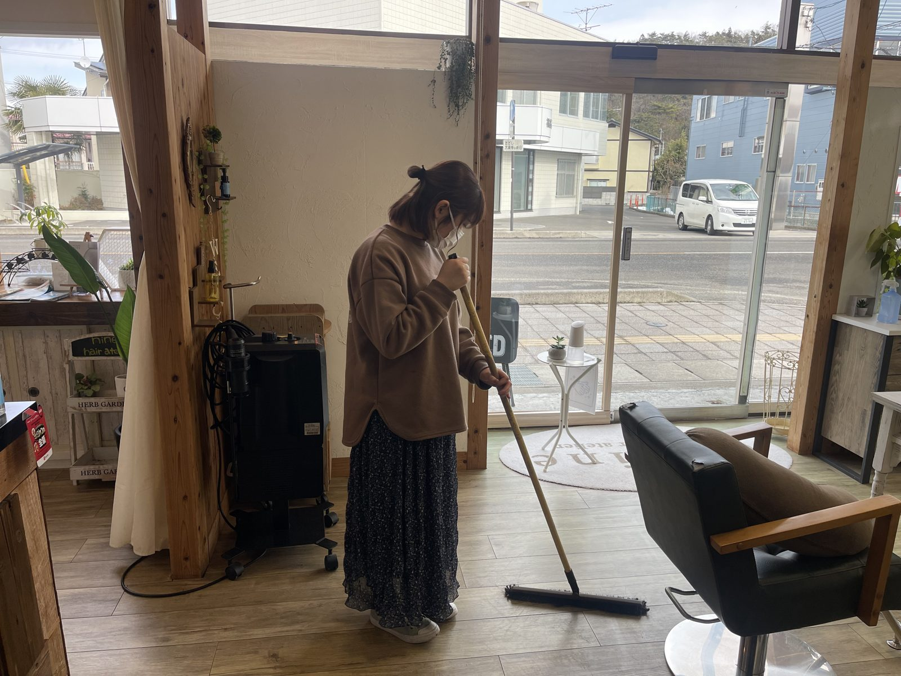
8:30 営業前の店内清掃・準備
出勤後は、気持ちよく1日をスタートするために、店内の清掃と営業に向けた準備を行います。
お客様をお迎えする空間を整える、大切な時間です。

9:00 営業開始
ご予約優先制のため、スムーズにお客様をご案内しながら施術を行っていきます。
お店全体では、1日あたり平均20名ほどのお客様がご来店されます。
スタイリスト1人あたり、1日3〜5名ほどのお客様を丁寧に担当していただいております。
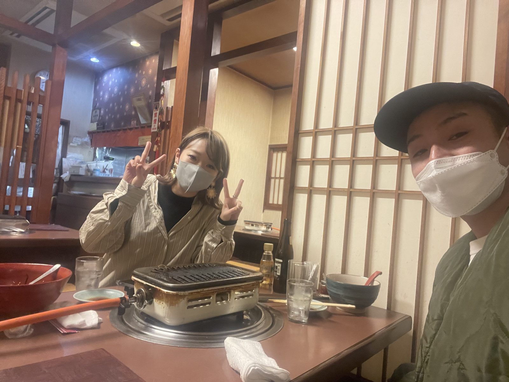
13:00 休憩・ランチタイム
手が空いたタイミングで、1時間の休憩をしっかり取っていただきます。
休憩中は各自自由に過ごせるので、外にランチへ出かけたり、カフェでリフレッシュするスタッフもいます。
自分のペースでゆったり過ごせる時間です。
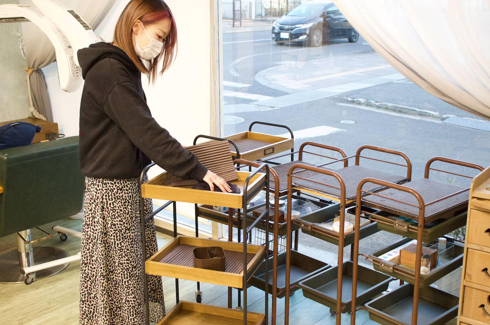
16:00 営業中に掃除スタート
予約の空いているスタッフから順番に、夜のお掃除を始めていきます。
当サロンでは、スタイリスト・アシスタント問わず、全スタッフで清掃を分担しています。
お客様がいらっしゃる際は、施術の妨げにならないよう配慮しながら作業を行います。
営業終了後にスムーズに退勤できるよう、みんなで協力し合って取り組んでいます。
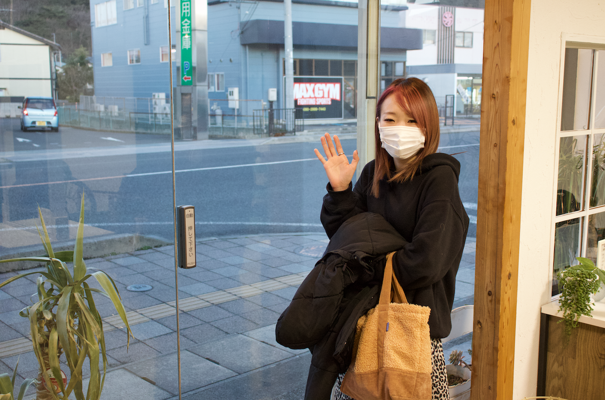
18:00 営業終了・退勤
サロンワークや清掃などがすべて完了していれば、そのまま速やかに退勤となります。
雑務も残っていないため、営業終了後はすぐに帰宅可能です。
練習は自由参加となっておりますので、自主的に残ってスキルアップに取り組むこともできます。
※日曜日は営業時間が17:00までのため、平日より1時間早く退勤となります。
サロンで働くスタッフの声
休みもプライベートも取れて、収入もアップ。
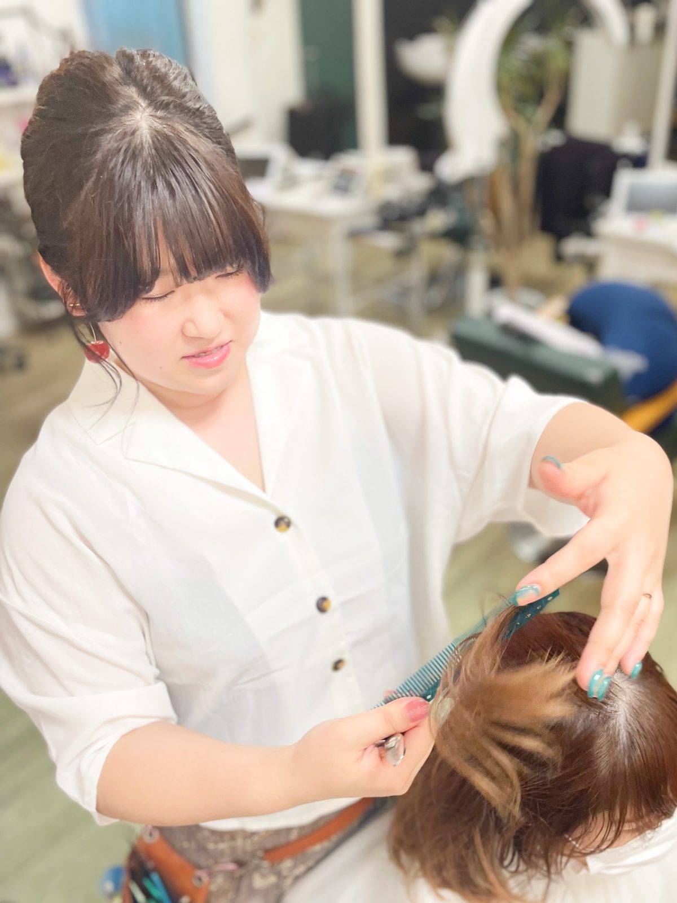
前の職場では、なかなかスタイリストに上がれず、モチベーションが下がっていました。
このまま美容師を続けても意味があるのか悩んでいた時に、nineに出会いました。
入社してすぐスタイリストまでのカリキュラムを組んでいただき、入社半年でスタイリストデビュー。すぐにお客様をたくさん担当させていただけて、チャンスがどんどん巡ってきました。
2年目には月間売上90万円を達成し、自分でも驚いています。
毎日お客様の「キレイ」にしっかり向き合えるのが本当に嬉しいです。
前職では想像もできなかった“美容師って楽しい”を実感しながら、充実した毎日を送れています。
大好きな美容の仕事ができる毎日がとても幸せです。
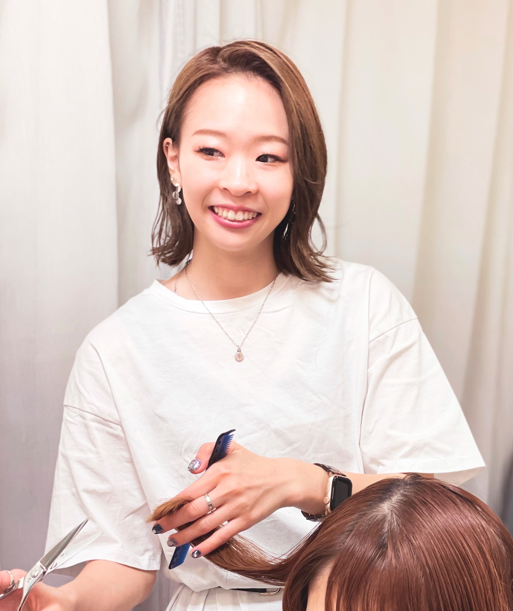
美容学校を卒業後、関東のサロンに就職しましたが、コロナの影響で地元に戻ることを決めました。
その後、nineに中途アシスタントとして入社しました。
前職での経験やスキルをしっかり聞いていただき、足りない部分は私に合わせたオリジナルのカリキュラムを作成してくださったおかげで、入社から1年でスタイリストデビューすることができました。
2年目には月間売上90万円を達成。
昨年からは産休に入りましたが、復帰後も子育てと両立できるよう、働き方を柔軟にサポートしていただいています。
美容師の仕事も、プライベートも、どちらも大切にできる環境に本当に感謝しています。
新卒採用でスタイリストデビュー。
しっかりサポートしていただき感謝です。
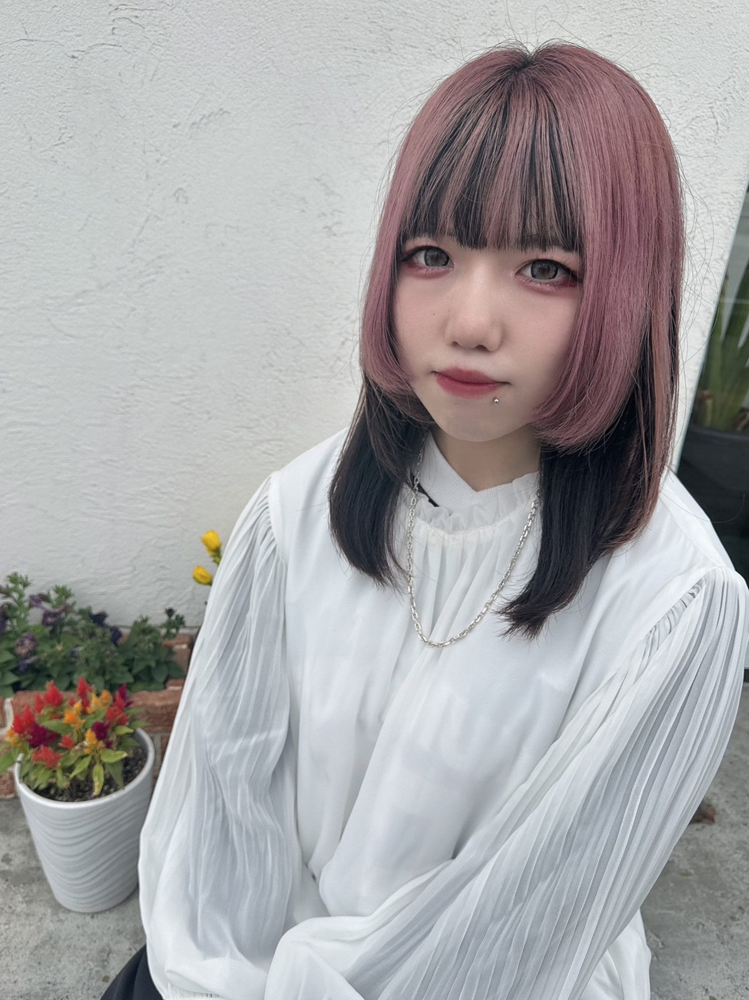
私はnineに新卒で入社しました。
入社後は、スタイリストになるまでの教育カリキュラムをしっかり組んでいただき、無理のないスピード感で、自分に合ったペースで成長することができました。
その結果、約2年でスタイリストデビュー。安心してステップアップできたのは、丁寧に寄り添ってくださった先輩方のおかげです。
デビュー後も、売上アップやお客様のリピートを増やすコツなど、具体的できめ細やかなアドバイスを日々いただけるので、今でも「もっと成長したい！」という気持ちを持ち続けながらサロンワークができています。
そして今後は、初めての産休に入らせていただく予定ですが、先輩スタッフたちが産休・育休を経てしっかり復帰されている姿を見ているので、不安はまったくありません。
会社の手厚いサポート体制があるからこそ、ライフイベントにも安心して向き合えると感じています。
応募から採用まで

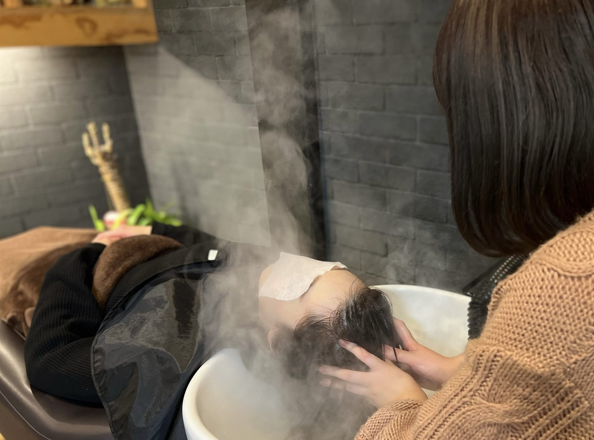
随時、サロン見学を兼ねた説明会を行っております。
↓↓ 当社の入社までの流れと致しましては ↓↓
①LINEでお気軽にお問い合わせください！
サロン見学をご希望の方は、
トーク画面に【サロン見学希望】とご記入のうえ、ご連絡ください♪
担当スタッフより、折り返しご返信させていただきます。
「ちょっと気になることがある…」
「見学の前に質問だけしてみたい」
そんな方も大歓迎です！
LINEでのやりとりなので、時間のあるときに気軽にご相談くださいね◎
あなたからのメッセージ、お待ちしています♪
②サロン説明会（サロン見学）
サロン見学では、実際の雰囲気を見ていただきながら、
nineの働き方や教育体制、待遇などをしっかり丁寧にご説明いたします。
ホームページやSNSだけでは伝えきれないリアルな情報も、包み隠さず、正直にお伝えいたします。
「入社したら話が違った…」なんてことがないように、事前に不安や疑問はすべて解消できる時間にしたいと考えています。また、実際に働いているスタッフに質問もしていただいておりますので、求人採用担当者だけでなく、リアルなスタッフの声も聞ける流れも準備しております。
なお、こちらからの質問や選考に関するお話は、実際に面接へ進まれる方のみとなりますので、
まずはお気軽にサロン見学だけでもお越しくださいね。
③面接について
サロン見学後、「ここで働いてみたい！」と思っていただけた方には、
後日、面接へと進んでいただきます。
※サロン見学と面接は、同日に実施いたしません。
まずはnineの環境をしっかり見ていただき、じっくりご自身の気持ちを整理してからご判断ください。
ご希望の方は、見学後に「面接希望」とLINE等でご連絡ください。
その時点で、面接日程を一緒に調整させていただきます。
私たちも、ご縁を大切に、ひとり一人に誠実に向き合いたいと考えています。
少しでも気になることがあれば、遠慮なくご質問くださいね。
④採用・研修について
採用が決まりましたら、まずは 6ヶ月の試用期間 を設けております。
技術・接客マニュアル、ヘッドスパの施術など、nineのスタイルをしっかり学んでいただきます。
「ブランクがある…」「自信がない…」という方でも大丈夫。
研修はひとり一人のペースに合わせて進めていきますので、安心してスタートできます。
特別な問題がなければ、試用期間が終わればそのまま無期雇用（正社員）へと移行していただけます。
安心して長く働いていただけるよう、しっかりサポートいたします！
⑤入客について
・スタイリスト・アイリストの方は
研修内容に問題がなければ、入社から2〜3週目を目安に入客をスタートしていただきます。
まずはフリーのお客様から担当していただき、少しずつお客様との関係を築いていけるよう、しっかりサポートします。
・アシスタントの方は
前のサロンで身につけた技術がある場合は、技術チェック後速やかにスタイリストのヘルプに入って技術を磨いてもらいます。
募集・応募概要
⇩⇩スタイリストの方はこちら⇩⇩
⇩⇩アシスタントの詳細はこちら⇩⇩
会社概要
■会社名：株式会社アトリエ・ナイン
■店舗名：hair atelier nine ＜森合店＞
hair atelier nine＜岡部店＞
eyelash salon. n plus
■勤務地
福島県福島市
・森合店＜福島県福島市森合字丹波谷地９−４＞
・岡部店＜福島県福島市岡部字内川１０９−２＞
・n plus＜福島県福島市森合字丹波谷地９−４−１０３（hair atelier nine 森合店の隣）＞
福島県福島市森合字丹波谷地９－４hair atelier nine
福島県福島市岡部字内川原１０９－２hair atelier nine